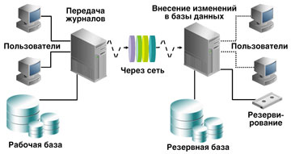
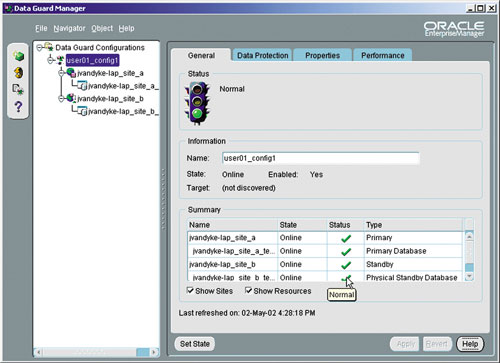
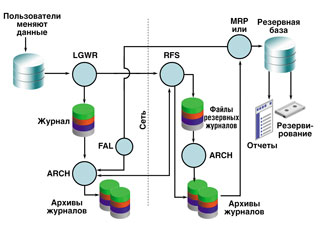
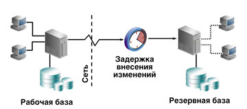
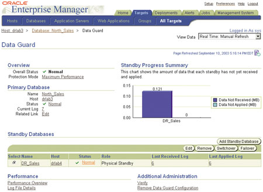

Олег Иванов,
Учебный центр ФОРС
2004@fors.com
После того, как база данных наполнена информацией, у администраторов баз данных (DBA) возникает естественное желание защитить данные от потери, даже если это не предусматривалось изначально при построении информационной системы. Самый простой способ - периодически копировать файлы базы или выгружать данные из таблиц программными средствами. Эти методы относятся к "холодному" и логическому резервированию. Холодным оно называется, так как пользователи при этом не работают с базой данных и службы, через которые они работают, "погашены". Если резервирование нужно выполнять так, чтобы не создавалось препятствий работе пользователей, такой тип резервирования называется горячим. Для логического резервирования обычно используют утилиту экспорта информации, которая поставляется, например, в составе ПО компании Oracle (http://www.oracle.ru). Преимущество холодного и логического резервирования в том, что они интуитивно понятны и просты в реализации. Основной недостаток - те данные, которые были введены после резервирования, нельзя восстановить, они будут потеряны. Однако в архитектуре баз данных Oracle заложена возможность восстановления информации без потерь.
Вся информация базы данных хранится в файлах, число которых редко меняется в процессе работы. Несколько пользовательских таблиц могут храниться в одном файле. Данные не хранятся нигде, кроме этих файлов, поэтому они и называются файлами данных (datafiles). Именно эти файлы копируются при выполнении холодного резервирования (cold backup) вместе с небольшим служебным файлом, который называется управляющим (control file).
При обновлении данных в таблицах в файлы данных вносятся изменения. Все изменения в любых файлах данных, помимо самих файлов, записываются в журнал изменений. Журнал хранится в отдельных файлах оперативных журналов (redolog files). Информации каждой записи из этого журнала достаточно для повторного внесения тех же самых изменений. Например, в записи указывается место в файле данных, куда вносилось изменение, когда и кем оно вносилось, и сами изменения. Для уменьшения объема сохраняемой информации в журнале хранится минимальный объем информации, по которому еще можно восстановить изменения. Например, вместо имени таблицы, в которую вставили строку, сохраняется уникальный номер объекта (таблицы), присвоенный ему в базе данных.
Просмотрев журнал, можно выяснить всю историю изменений в данных за какой-то промежуток времени. Например, можно взять файлы данных из копии, созданной некоторое время назад при холодном резервировании. Если сохранился журнал изменений на период от момента выполнения резервирования до момента сбоя базы данных, можно последовательно внести изменения во вчерашние файлы запись за записью. Получатся файлы, которые будут содержать все изменения до самого последнего момента перед сбоем. Этот процесс называется восстановлением базы данных. Восстановление без внесения изменений из журнала так, чтобы ни единой транзакции не было потеряно, называется неполным восстановлением. На самом деле восстановление всегда должно быть полным, так как потеря хотя бы части информации недопустима. Компания Oracle исходит из того, что ее технологии должны гарантировать целостность данных, которые уже внесены в базу. Только на крайний случай, если невозможно провести нормальное восстановление, дается возможность спасти хотя бы часть данных.
Сохранять файлы и журналы изменений нужно заранее, а не ждать момента сбоя. При возникновении сбоя c момента последнего резервирования может накопиться много изменений. Оценить объем изменений довольно просто: он соответствует размеру сгенерированных с момента резервирования файлов журналов (в файлах журналов большую часть объема занимают данные, под служебные записи отводится относительно немного места). Чтобы уменьшить время на восстановление файлов данных, можно периодически накладывать на сохраненные файлы данных накопившиеся изменения из журналов. Набор файлов, на которые постоянно накладываются изменения, называется резервной базой данных (рис. 1). Эти файлы в случае сбоя рабочей базы данных можно ввести в строй при минимальном времени простоя. Резервная база данных может по времени внесения изменений незначительно отставать от основной базы данных (primary database).
|  | Рис. 1. Рабочая и резервная базы.
|
Резервная база данных
Термин резервная база данных появился в ПО Oracle в 1995 г., начиная с версии 7.3. В то время объемы жестких дисков были невелики, а стоили они довольно дорого, и для резервирования даже небольших баз данных предпочитали использовать ленточные устройства. Процедуры упрощения работы с резервными базами данных стали развиваться с версии Oracle8i, когда жесткие диски начали дешеветь, а их объемы быстро расти. Новые технологии в производстве аппаратных средств дали толчок к развитию новой архитектуры резервирования баз данных.
Для создания резервной базы данных нужно скопировать на резервный компьютер рабочие файлы данных и настроить автоматическую передачу журналов изменений. На резервном компьютере нужно запустить процессы, которые будут принимать информацию из журналов и при возникновении сбоя рабочей базы данных сделают резервную доступной для работы пользователей, "активируют" ее с минимальной задержкой по времени и гарантированным отсутствием потерь данных. Схема довольно простая; интересны здесь возможности, которые дают процедуры автоматизации. Даже опытный администратор в случае сбоя может допустить ошибку; иными словами, в критической ситуации слабым звеном становится человек. Но ПО должно выполнять рутинные процедуры безошибочно и с минимальным вмешательством администратора. Задача же администратора сводится к настройке ПО.
Автоматизированные процедуры поддержки резервных баз носят в системе Oracle название Data Guard. Эти процедуры встроены в ПО Oracle. В их число входят графическая оболочка управления резервными базами, утилита командной строки (dgmgrl) и дополнительные процессы, которые выполняют часто встречающиеся действия, предназначенные для поддержки конфигурации взаимодействия основной и резервных баз данных.
Графический интерфейс Oracle Data Guard Manager (рис. 2) можно использовать для автоматического создания резервной базы. Он включен в стандартную оболочку ПО управления Oracle Enterprise Manager, начиная с версии Oracle9i. Администратору достаточно указать, на каком из компьютеров с установленным ПО Oracle нужно создать резервную базу данных. Оболочка сама выполнит резервирование файлов данных, перенесет их на резервный компьютер и изменит параметры конфигурации основной базы данных, чтобы она могла передавать журнальную информацию на компьютер с резервной базой.
|  |
| Рис. 2. Oracle Data Guard Manager - графическая оболочка управления.
|
Создание физической резервной базы
Сначала создается управляющий файл - служебный файл небольшого размера, содержащий названия всех файлов данных и их параметры. Служебный файл вместе с копией файлов данных переносится на удаленный компьютер. На этом компьютере должно быть установлено стандартное ПО Oracle для управления базами данных. Основное неудобство в том, что программная архитектура основной и резервных баз данных должна быть одинакова. Например, невозможно создать резервную базу на платформе Linux, если основная работает под Windows. Это ограничение связано с тем, что в ОС различаются низкоуровневые программные интерфейсы (API) для работы с файлами, а следовательно, структуры файлов базы данных также имеют отличия. Версии ОС в пределах семейства и платформы могут быть любыми, главное, чтобы на них могло работать ПО Oracle.
Далее программно запускается служба, которая будет принимать журнальную информацию от основной базы данных и обслуживать пользователей в случае активации резервной базы данных. Эта служба называется экземпляром Oracle. Служба состоит из нескольких процессов ОС, каждый из которых выполняет набор действий, определенный программистами Oracle. Несколько процессов нужны, чтобы возложить задачу распределения процессорного времени для одновременного выполнения разных задач на планировщик ОС.
После запуска экземпляра, обслуживающего резервную базу, нужно указать экземпляру основной базы, куда посылать журнальную информацию. Она может передаваться немедленно, практически без задержек, по мере наполнения буфера журнальной информации или по мере генерации нового журнального файла (это устанавливается администратором). Пересылка данных по мере генерации файлов совершенно необременительна для рабочей базы, так как этим будет заниматься отдельный процесс-архиватор (ARCn). Независимо от скорости сети, которая связывает оба компьютера, или сетевой задержки, накопленная информация будет передана.
Передача журнальных записей
Если возникнет долговременный сбой сети или компьютера с резервной базой данных, то журналы, которые не были переданы, будут запрошены резервной базой данных позже. В любом случае архиватор сохраняет всю журнальную информацию в каталоге на компьютере с рабочей базой данных в виде файлов - ведет архив журналов. Администратор обычно удаляет архив, когда в нем отпала необходимость. Именно из этого архива и будут браться файлы, которые не удалось передать в резервную базу. Для их передачи экземпляр резервной базы создает процесс FAL-клиент, который обращается к экземпляру рабочей базы. На нем создается процесс, называемый FAL-сервер, который и передает требуемую информацию (рис. 3). В промышленных системах, где нагрузка на рабочие базы данных велика, файлы можно запрашивать у других резервных баз, которые успели вовремя получить журналы. Но здесь для упрощения мы рассматриваем только базовые возможности. Традиционно ПО Oracle дает администраторам возможность настроить систему управления базами данных так, чтобы удовлетворить любые запросы. Пользоваться всеми возможностями сразу обычно не требуется. Достаточно знать, что такие возможности есть и, если возникнет необходимость, их можно использовать.
|  | Рис. 3. Архитектура передачи журналов.
|
Архиватор обычно передает журналы с задержкой в десятки минут. Начиная с версии Oracle9i, журнальную информацию можно передавать без задержки с помощью другого процесса - записи в текущие журнальные файлы (LGWR). При этом резервная база данных может получать журнальную информацию со скоростью ее создания. Это позволит в случае серьезного сбоя компьютера с рабочей базой моментально активировать резервную (сделать ее доступной для работы пользователей), так как не придется дожидаться получения самых последних изменений от основной базы. Чтобы не возникало нагрузки на рабочую базу данных, сетевое соединение должно быть довольно быстрым, т. е. работать с минимальной задержкой, помимо высокой пропускной способности канала передачи.
При конфигурировании процесса передачи журналов администратор также должен указать, необходимо ли основной базе данных приостанавливать обслуживание пользователей до тех пор, пока все изменения не будут переданы в резервную базу. Если обслуживание не приостанавливать, то данные будут переданы процессами FAL с задержкой, когда восстановится сетевое соединение. При неблагоприятном стечении обстоятельств: отказе сети и последующем отказе рабочей базы администратору нужно будет дождаться передачи недостающих журналов и только тогда активировать резервную базу. Он может активировать резервную базу данных и немедленно, но тогда часть изменений будет потеряна. Их нужно будет вносить позже на логическом уровне. В зависимости от важности хранимых данных администратор принимает решение об уровне их защиты.
Процессы Oracle Data Guard
Решение об активации резервной базы данных принимает администратор базы. Для облегчения процедуры активации или ее автоматизации, начиная с версии Oracle9i, в Data Guard можно использовать дополнительные процессы, называемые Data Guard Broker (dgbroker) и Data Guard Monitor (DMON). Они запускаются на экземплярах рабочей и резервных баз и автоматизируют процессы активации резервной базы, передачи недостающих журналов и перезапуска экземпляров, где произошел сбой. Эти процессы могут быть запущены на любом из экземпляров, обслуживающих базы данных. Архитектура работы этих процессов схожа с менеджером процессов OPMN и DMON, которые используются в сервере приложений Oracle9i AS. Процесс DMON использует собственный файл, где сохраняет полезную для себя информацию, которую нежелательно терять при остановке экземпляра (например, сведения о том, какие базы в сети основные, а какие - резервные). Поскольку эти процессы появились не так давно - в версии Oracle9i, реализованная в них логика не отличается большой глубиной. Например, в случае остановки основной базы и последующего монтирования процессы автоматически откроют основную базу. Если администратор предполагает выполнить какие-то действия в режиме монтирования, они скорее всего будут выполняться на открытой базе. Положительная черта этих процессов в том, что их можно безбоязненно отключить в любой момент даже без остановки экземпляра. Оболочки администрирования Data Guard требуют их работы и при необходимости запускают процессы.
Администраторы часто сталкиваются с тем, что в базу внесены ошибочные изменения и необходимо восстановить данные на определенный момент времени в прошлом. В СУБД Oracle предусмотрена возможность указать в запросе время, на которое требуются данные. Эта возможность появилась в версии 9i и называется Oracle Flashback. Однако если таблица с данными удалена полностью, то воспользоваться этой возможностью нельзя. Для таких случаев администратор может указать для одной из резервных баз данных задержку, с которой нужно вносить в нее изменения из полученных журналов (рис. 4).
|  | Рис. 4. Резервная база с отставанием по времени.
|
Логическая резервная база
В процессе работы резервная база данных не может обслуживать пользователей. Однако желание включить ее в повседневную работу остается. Резервная база может обслуживать запросы пользователей в те моменты, когда она не вносит в свои файлы изменений. При этом журнальные файлы будут накапливаться на компьютере с резервной базой, и их можно будет ввести в файлы позже. Например, днем резервная база может быть открыта для чтения и обслуживать запросы, для которых актуальность информации не важна. Это могут быть приложения, обрабатывающие данные за прошлые дни, - например, системы поддержки принятия решений (decision support system), которые создают большую нагрузку на рабочую базу данных. При этом резервная база данных будет принимать все журналы, сгенерированные рабочей базой в течение дня. На ночь же администратор может перевести резервную базу данных в режим внесения накопленных изменений.
В качестве альтернативы можно использовать логическую резервную базу данных. Такая возможность появилась в версии Oracle 9.2, и ее можно использовать одновременно с традиционными физическими резервными базами. Администратор сам выбирает, сколько и каких резервных баз должно быть. Журнальная информация содержит все сведения о том, какие изменения были внесены в рабочую базу данных. В версии 8i появилась возможность анализировать журнальные файлы и воссоздавать часть команд, которые выполнялись пользователями при работе с основной базой данных. Доработав эту технологию и добившись восстановления большей части команд, компания Oracle смогла предложить новую технику логического резервирования. Если в физической резервной базе из журнальных данных выбирается информация об изменениях, внесенных напрямую в файлы данных - на физическом уровне, то в логической резервной базе реконструируются команды SQL, при помощи которых эти изменения были внесены (команды, которые выдавали пользователи при операциях с рабочей базой). Восстановив поток команд, можно повторно ввести их уже в резервную базу. Изменения вносятся не на физическом уровне, а на логическом - на уровне таблиц. При этом физическая структура файлов резервной базы может отличаться от той, что существует в рабочей базе. Достаточно лишь, чтобы существовали объекты с теми же именами, которые есть в рабочей базе.
Выдавать команды SQL, восстановленные из журналов, можно из базы, открытой для работы пользователей. Необходимо только позаботиться о том, чтобы пользователи не конфликтовали с процессами, вносящими изменения. Самое простое решение - не давать возможности пользователям, работающим с резервной базой, менять в ней данные. Таким образом, пользователи могут работать с логической резервной базой в режиме чтения.
Используя логические резервные базы данных, нужно иметь в виду особенности их работы. Восстановление команд SQL и внесение изменений в базу требуют дополнительных процессорных ресурсов. Эти процессы некоторым образом повторяют все транзакции, прошедшие на рабочей базе. Чтобы ускорить внесение изменений, на резервной базе создается пул процессов, которые вносят изменения. Он называется Log Apply Services и состоит из процессов LSPn - координаторов и PX (parallel execution), которые восстанавливают команды SQL и вносят изменения. Эти процессы не восстанавливают команд, не меняющих данные (например, SELECT), так как в журнал изменений они не записываются. Обычно именно команды SELECT создают основную нагрузку на процессор компьютера с основной базой.
Вторая особенность работы логической резервной базы в том, что по журналам сложно восстановить логические команды, которые вносили изменения в основную базу. Для того, чтобы резервная база могла это делать, нужно, чтобы в журнал изменений добавлялась дополнительная информация. Для команд, меняющих данные в таблицах (INSERT, UPDATE, DELETE, MERGE), нужно сохранять значение первичного или уникального ключа. Из-за этого объем журнальной информации возрастает. Если у основной базы каналы записи в файлы журналов загружены, производительность ее снизится. Логическая резервная база может использоваться, если объемы изменений основной базы невелики или если переключение пользователей, которые не вносят изменения, на работу с резервной базой сможет разгрузить основную базу.
Технология восстановления SQL-команд из журнала изменений легла в основу Oracle Streams, новой технологии перемещения изменений между базами (репликации). Изменения можно вносить только в часть таблиц, а резервная база слабо связана с основной. Можно настроить репликацию изменений, сделанных в основной базе, в любые другие. Эта идея была реализована начиная с версии 9i как альтернатива существовавшим ранее методам репликации. Преимущество Oracle Streams в том, что нагрузка на основную базу данных существенно ниже, чем при репликации другими методами, которые доступны в базах Oracle. В архитектуре Oracle Streams предусмотрена возможность выбирать информацию из журналов как основной базы, так и любой другой. Выборка данных из основной базы имеет то преимущество, что не требуется передавать большие объемы журнальной информации на удаленные компьютеры, загружая сеть.
В новой версии Oracle10g (рис. 5), которая вышла в начале этого года, в архитектуру резервных баз были внесены небольшие улучшения, в основном связанные со снятием ограничений на использование резервных баз и удобством их использования. Например, в 10g сброс последовательности нумерации журнальных файлов (resetlogs) не требует пересоздания резервных баз данных. Основные изменения коснулись оболочки администрирования - в частности, в 10g для управления базами данных используется Web-интерфейс.
|  | <.tr>
| Рис. 5. Data Guard Manager 10g.
|
И в заключение добавим, что для изучения техники управления резервными базами компания Oracle выпустила специальный учебный курс: Oracle9i Database: Data Guard Administration.